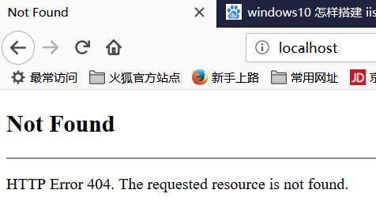
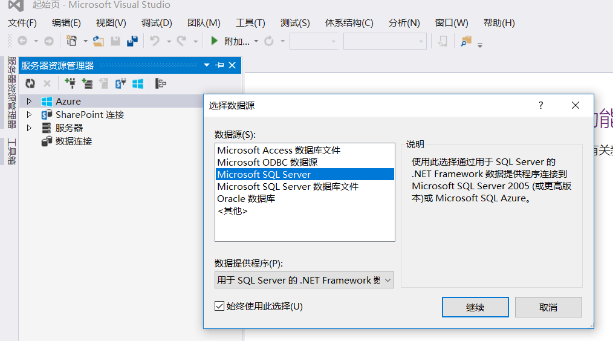
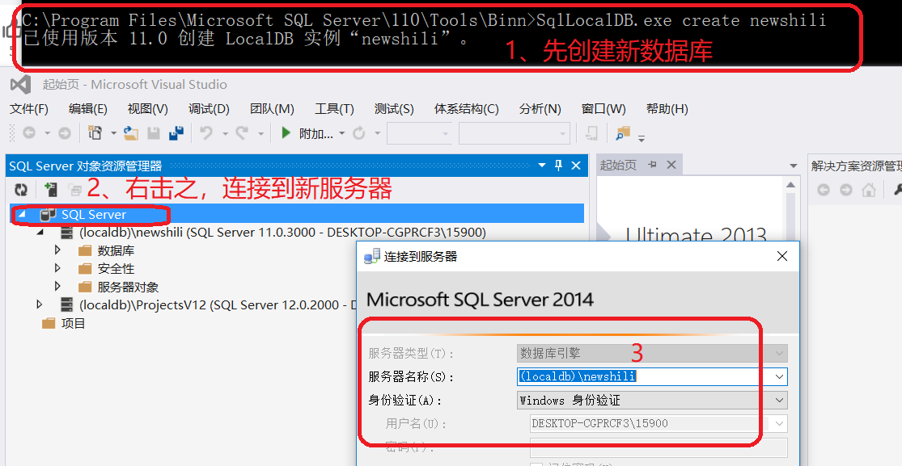

windows常用操作技巧
windows常用操作技巧一、mstsc -v 远程发现串口连接不上设备二、win7断开 samba的方法三、windows 架构 IIS 服务器I、打开控制面板II、开启 IIS 服务III、配置IIS网站IV、IIS无法验证对路径…………的访问【解决方法】V、授权配置无法保存，意外VI、授权问题解决，仍然无法正常访问四、配置 visual studio 2013 内置 sql-serverI、在Visual Studio中单击“工具”——“连接到数据库”II、在“添加连接”对话框中的“服务器名”中输入“自己的计算机名“1、查看本机”计算机名“2、配置服务器名为”本地计算机名“后，测试失败3、升级 VISUAL STUDIO 浪费了90分钟，无济于事4、于是继续看 http://www.cnblogs.com/qixi233/p/4766451.html5、点击'SQL SERVER'对象资源管理器III、数据库操作6、添加新数据库，添加新表7、更新数据库，即看到新增的表8、增加数据9、怎样在代码中取得数据IV、visual studio 2013 内置数据库，创建数据库失败1、为本机数据库端口，专门放开防火墙2、配置防火墙之后，问题仍然存在3、继续在百度寻寻觅觅，终于找到答案4、SQL 数据库连接中Integrated Security问题五、利用 .PDM 文件得到sql脚本I、 sybase 资源获取II、利用 pdm 文件生成 sql 脚本六、visual studio 2013利用 sql 文件创建表七、安装免费的 SQL-SERVER1、资源获取2、安装3、安装过程中，出现问题八、免费的 sql server 2017 与 visual studio 2013 不兼容九、 visual studio 2013 对接 sql server 2008 expressI、 sql server 2008 express 资源获取II、正常安装，速度比 2017 快很多III、连接。IV、C#代码连接数据库十、将安装时 windows 认证改为 sql server 认证十一、换个思路，C++写代码连接 sql-server2008I、第一个例子，失败II、例二。ODBC连接 SQLServer 和 MySQL十二、 Microsoft SQL Server Management studio执行脚本报错及解决办法十三、偷 Microsoft 的 visual studio 2017十四、 delphiI、基础安装
一、mstsc -v 远程发现串口连接不上设备
- mstsc -v
- 本地资源
- 详细信息
- 将“端口”去掉
- 再重新连接，secureCRT 可成功连接串口
二、win7断开 samba的方法
- 执行命令:
control keymgr.dll，删除相应凭证 - 然后重启PC，否则无法删除干净
- 或者不删除、不重启，而是编辑之，将保存的用户名/密码更改一下，立即生效
三、windows 架构 IIS 服务器
此帮助文件来源于：
https://jingyan.baidu.com/article/eb9f7b6d9e73d1869364e8d8.html 第一个不全
https://blog.csdn.net/staunchkai/article/details/78975865 第二个补充
https://jingyan.baidu.com/article/20b68a886d7312796cec62ef.html 第三个讲述IIS验证
I、打开控制面板
直接在左下角输入“控制面板”，即弹出控制面板，WIN10这方面智能一点II、开启 IIS 服务
xxxxxxxxxx打开控制面板后=》选择程序=》启用或关闭windows功能 =》Internet Information Services =》勾选如下内容（事实上还可以选择更多）
III、配置IIS网站
xxxxxxxxxx左边栏输入“管理工具”，找到管理工具 =》 Internet information Services(IIS)管理器 =》点击左边栏，在 计算机 名下，网站文件夹下已经默认存在一个网站IV、IIS无法验证对路径…………的访问【解决方法】
xxxxxxxxxx网站启动之后，发现无法访问。

xxxxxxxxxx新建一个用户，或者使用系统已有用户

V、授权配置无法保存，意外
xxxxxxxxxx再次访问本地WEB服务，失败依旧。于是到授权界面。发现又变成了授权失败。原因何在？原来在配置 IIS 授权时，应该将 WEB 服务停掉。我样配置好之后再启动服务，状态就不会丢了
VI、授权问题解决，仍然无法正常访问
至此僵住。无法突破
四、配置 visual studio 2013 内置 sql-server
I、在Visual Studio中单击“工具”——“连接到数据库”
在弹出的“选择数据源”对话框中选择“Microsoft SQL Server”，单击“继续”

II、在“添加连接”对话框中的“服务器名”中输入“自己的计算机名“
xxxxxxxxxx在“添加连接”对话框中的“服务器名”中输入“自己的计算机名\SQLEXPRESS”，如“HAIYANG-PC\SQLEXPRESS”，单击“确定”。也可以先单击“测试连接”按钮进行测试，会弹出对话框提示。 1、查看本机”计算机名“
xxxxxxxxxx右击”此电脑“=》属性
2、配置服务器名为”本地计算机名“后，测试失败
3、升级 VISUAL STUDIO 浪费了90分钟，无济于事
4、于是继续看 http://www.cnblogs.com/qixi233/p/4766451.html
人家下面已经给出了解决办法，只怪自己没有看完，工具-->选最下面的“选项”->>输入'sql server'
5、点击'SQL SERVER'对象资源管理器

发现已经得到一个名叫 master 的数据库了
III、数据库操作
6、添加新数据库，添加新表
右击数据库，==》添加数据库，即可添加好自己的数据库，然后添加自己的表

7、更新数据库，即看到新增的表
8、增加数据
xxxxxxxxxx右击新建的表，dbo.wishcell_table ，然后选择“查看表格”，然后就可以随意添加内容
9、怎样在代码中取得数据
IV、visual studio 2013 内置数据库，创建数据库失败
1、为本机数据库端口，专门放开防火墙
xxxxxxxxxx控制面板->>系统安全->>Windows防火墙->>高级设置1、新建入站规则2、选择端口，下一步3、选择特定本地端口，填写1433，然后全部下一步2、配置防火墙之后，问题仍然存在
3、继续在百度寻寻觅觅，终于找到答案
xxxxxxxxxxhttps://blog.csdn.net/md912165100/article/details/51499754xLocalDB 命令的使用：C:\Program Files\Microsoft SQL Server\110\Tools\Binn>SqlLocalDB.exe infoMSSQLLocalDBnewshiliv11.0创建新的数据库：C:\Program Files\Microsoft SQL Server\110\Tools\Binn>SqlLocalDB.exe create newshili已使用版本 11.0 创建 LocalDB 实例“newshili”。由于之前数据库被手动删除，无法找回。直接将 visual studio 2013 重启。发现自动加载了： (localdb)\ProjectsV12(SQL Server 12.0.2000 - DESKTOP-CGPRCF3\15900)然后，手动添加刚刚在命令行创建的数据库： newshili
4、SQL 数据库连接中Integrated Security问题
xxxxxxxxxx一、Integrated Security=True 的时候，连接语句前面的 UserID, PW 不起作用，即采用windows身份验证模式。 只有设置为 False 或省略该项的时候，才按照 UserID, PW 来连接。二、Integrated Security 可以设置为: True, false, yes, no 还可以设置为：sspi ，相当于 True，建议用这个代替 True。三、initial catalog与database的区别是什么 Initial Catalog: / DataBase: 两者没有任何区别只是名称不一样，就好像是人类的真实姓名与曾用名一样。。都可以叫你四、你可以使用SQL SERVER的用户名和密码进行登录，如： "Provider=SQLOLEDB.1;Persist Security Info=False;Initial Catalog=数据库名;Data Source=192.168.0.1;User ID=sa;Password=密码"
五、利用 .PDM文件得到sql脚本
xxxxxxxxxx项目中数据库需用到大量表，但是不知如何创建。看到有 Workspace.sws / ThreeA.pdm 等文件。于是开始一段 sybase 探索之路I、 sybase 资源获取
xxxxxxxxxx1、百度云盘：PowerDesigner165_破解版.rar / PowerDesigner165安装程序.zip2、玩客云---分区1---onecloud---tools---PowerDesigner165_破解版.rar 玩客云---分区1---onecloud---tools---PowerDesigner165安装程序.zipII、利用 pdm 文件生成 sql 脚本
xxxxxxxxxx双击 WorkSpace.sws，打开工作空间，里面带了三个项目,按图操作
六、visual studio 2013利用 sql 文件创建表
xxxxxxxxxx打开一个 SQL 语句编辑器（具体怎么打开，又不会了）。可以右击数据库，选择创建新表，然后会弹出一个SQL语句编辑环境，直接在这里进行语句编辑也可以。直接将刚刚生成的 crebas.sql 内容复制---粘贴到编辑区，然后点执行，很快在数据库中生成很多表
七、安装免费的 SQL-SERVER
xxxxxxxxxx鉴于 visual studio 2013 内置 SQL-SERVER 死活连接不上。只得尝试独立安装 SQL-SERVER1、资源获取
xxxxxxxxxx1、从此界面给出的四个链接地址下载2、玩客云--分区1--onecloud--SPS_9.2.0.24_1033.cab --onecloud--SRO_3.3.3.24_1033.cab --onecloud--SPS_9.2.0.24_1033.cab --onecloud--SRS_9.2.0.24_1033.cab 实际安装时，必须将 1033 改为 20522、安装
xxxxxxxxxx可以三种方式安装：正式版（180天试用期）、开发版（无功能限制，但是不能商用）、简化版。本人直接安装开发版。安装过程中填写的一些参数：https://desktop-cgprcf3:8391CN=desktop-cgprcf3; CN=192.168.1.103；CN=127.0.0.1；添加的本机用户名：MSSQLSERVER 是默认的数据库名。sa 密码： wishcell3、安装过程中，出现问题
xxxxxxxxxx安装到“脱机安装 Microsoft 机器学习服务器组件” 的时候，无法进行下一步。为此浪费许多时间解决方法：
八、免费的 sql server 2017 与 visual studio 2013 不兼容
xxxxxxxxxx于是只得御载之。具体御载过程如下：九、 visual studio 2013 对接 sql server 2008 express
I、 sql server 2008 express 资源获取
xxxxxxxxxx玩客云 》 分区1 》 oncloud 》tools 》 SQLServer2008JTZWB_XiaZaiZhiJia.zipII、正常安装，速度比 2017 快很多
III、连接。
xxxxxxxxxxsql server 2008 安装完成后，重启电脑，开启服务，发现 visual studio 2013 很容易添加本机服务器，并进行操作。建数据库，建表IV、C#代码连接数据库
xxxxxxxxxx与连接本 LocalSqlDB 一样。仍然是连接是报异常十、将安装时 windows 认证改为 sql server 认证
十一、换个思路，C++写代码连接 sql-server2008
I、第一个例子，失败
xxxxxxxxxxint main() { SQLHENV env; //environment handle SQLHDBC dbc; //connection handle SQLHSTMT stmt; //state handle SQLRETURN ret; //result return /* Allocate an environment handle */ SQLAllocHandle(SQL_HANDLE_ENV, SQL_NULL_HANDLE, &env); /* We need ODBC 3 support */ SQLSetEnvAttr(env, SQL_ATTR_ODBC_VERSION, (void *)SQL_OV_ODBC3, 0); /* Allocate a connection handle */ SQLAllocHandle(SQL_HANDLE_DBC, env, &dbc); std::cout << "now tring to connect" << std::endl; /* Connect to the odbc */ SQLDriverConnectW(dbc, NULL, L"DRIVER={SQL Server};SERVER=127.0.0.1;DATABASE=SQL_Local;User ID=sa;Password=wishcell;", SQL_NTS, NULL, 0, NULL, SQL_DRIVER_COMPLETE); std::cout << "I tried!" << std::endl; /* Check for success */ if (SQL_SUCCESS != SQLAllocHandle(SQL_HANDLE_STMT, dbc, &stmt)) { std::cout << "Failed to connect" << std::endl; } else { std::cout << "Succeed to connect" << std::endl; /* close connection */ SQLFreeHandle(SQL_HANDLE_STMT, stmt); SQLDisconnect(dbc); SQLFreeHandle(SQL_HANDLE_DBC, dbc); SQLFreeHandle(SQL_HANDLE_ENV, env); } //std::cin.get(); return 0;}xxxxxxxxxx编译： $ g++ -g connect_db.cpp -lws2_32 -mwindows -lcomctl32 -lwinmm -lodbc32 -lwinspool -lwsock32 -Wwrite-strings -o connect_db
II、例二。ODBC连接 SQLServer 和 MySQL
十二、 Microsoft SQL Server Management studio执行脚本报错及解决办法
十三、偷 Microsoft 的 visual studio 2017
xxxxxxxxxx下载地址点击这里(https://visualstudio.microsoft.com/zh-hans/downloads/) 该版本堪称史上最大IDE，随便勾了几个选项，就要占用几十个GB的安装空间，最后果断选择了最小安装包，只要600多Mb 安装成功，随便打开一个项目之后，就获得提示：要打开这个项目，还需要继续安装xxx和xxx选项，点击确定后弹出安装界面，vs自动帮我勾选了4个多G的安装内容（赞一下这个安装方式，按需安装，尽量减少磁盘空间占用） 最后就是贴出安装序列号啦，建议大家安装企业版，功能最强大企业版：NJVYC-BMHX2-G77MM-4XJMR-6Q8QF专业版：KBJFW-NXHK6-W4WJM-CRMQB-G3CDH
十四、 delphi
I、基础安装